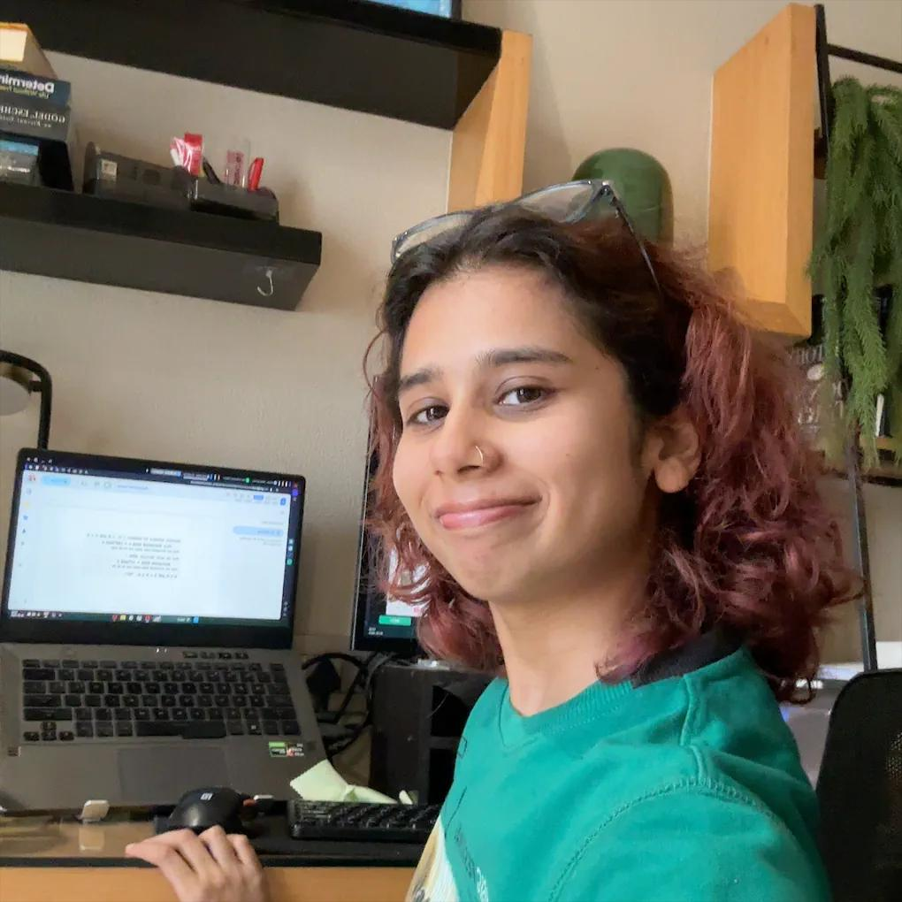

about

I'm deeply interested in everything in health tech - specially clinical AI and wearables - as well as women's health research. I aim to explore these themes through my work and contribute to advancing both research and real-world impact. I aim to work on projects that bridge the gap between computational research and industry applications in women's health.
Outside of work, I’m really enjoy strength training and running, and I’ve recently been enjoying trekking a lot. I love writing and experimenting with different art forms and technologies.
I also enjoy collaborating on interdisciplinary projects that bring together different perspectives.